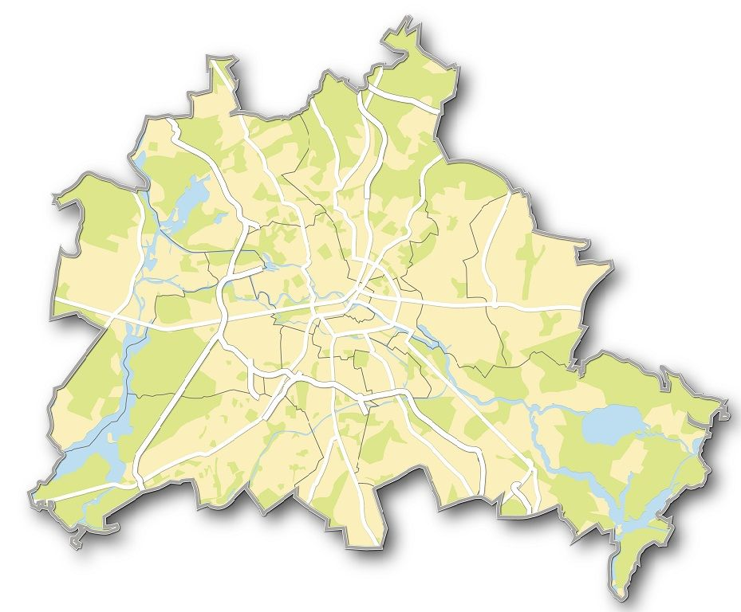

abiotische/biotische Faktoren
abiotische Faktoren:
Abiotische Faktoren sind Umweltfaktoren, an welchen Lebewesen nicht direkt beteiligt sind.
Abiotische Faktoren können das leben aller Lebewesen Beeinflussen (z.B. die Paarungszeit oder den Laubfall).
biotische Faktoren:
Biotische Faktoren sind Umweltfaktoren, an welchen Lebewesen direkt beteiligt sind.
Biotische Faktoren können das leben aller Lebewesen Beeinflussen (z.B. die Räuber-Beute-Beziehung, Konkurrenz und Symbiose).
Beispiele für abiotische Faktoren:
• Kohlenstoffdioxid
• Sauerstoff
• Niederschlag
• Temperatur
• Sonnenlicht
• Wind
• Luftfeuchtigkeit
• Boden (pH -Wert)

Beispiele für biotische Faktoren:
• Bodenlebewesen
• Pflanzen
• Parasiten
• Bestäubende Insekten
• Tiere (Fressfeinde)
• Mensch
• Lärm (Bsp. Schiffe)
• Vermüllung (Bsp. Plastikmüll)
• Fischfang
Durch den Lärm, die die menschen im Meer machen, wie z.B durch schiffe, Bohrplattformen oder durch Unterwasser-Pipelines, ziehen viele Bewohner des Meeres weiter. 2005 wurde vor Sachalin (eine Russische Insel) ein Sockel einer Plattform gebaut, welcher sieben Kilometer von den Futterplätzen der Wale entfernt war. Daraufhin zogen die Wale weiter in Richtung Süden, aber fanden nicht viel Futter, weshalb viele Wale abgemagert waren. Dazu kommt es noch das diese Wale Grauwale sind, die Population der Grauwale des Nordwestpazifiks liegt nur noch bei 100 Walen. Die Menschen verändern aber auch die Fressfeine, da der Wahl eigenlich fast keine feine besitzt, der Mensch aber die Wale trotzdem gejagt hat, was dazu geführt hat das es mitlerweile deutlich weniger von ihnen gibt.
Ökosystem stadt
Abiotische Faktoren:
• Luft
• Temperatur
• Wetter
• Licht
• Geräusche
Von dem Menschen erschaffene abiotsche Faktoren:
• Gebäude
• Straßen
• Parkplätze
• Abfall
• Und viele weitere

Biotische Faktoren:
• Lebensbedingungen für viele Tiere besser als im Wald (Bsp. Der Fuchs)
• Vielfältiges Nahrungsangebot (Abfälle)
• Brut und Versteckungsmöglichkeiten (Bsp. Der Feldsperling)
• Liebesgras (in Pflasterritzen oder Straßenränder)
Was für Ursachen hat das Ökosystem Stadt auf Tiere:
• Das Ökosystem Stadt ist ein Ökosystem, welches nicht auf natürlichem Wege entstanden ist, sondern durch den Menschen erschaffen wurde. Die Erschaffung des neuen Ökosystems hat andere Ökosysteme Zerstört und deshalb vielen Lebewesen ihren Lebensraum genommen.
• Viele Tiere können in der Stadt nicht leben, da sie keine Nahrung oder plätze zum Leben finden können.
• Es gibt aber auch Tiere und pflanzen, welche sich an das Ökosystem Stadt anpassen.